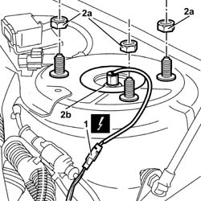
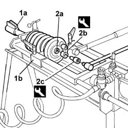
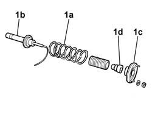
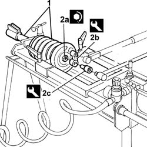

4440F12 Front intelligent suspension SHOCK ABSORBER (one) - Includes dismantling/reassembly at the bench - R.R.
- Path
- Procedures > 44 SUSPENSION AND WHEELS > 4440 INTELLIGENT SUSPENSION > 4440F INTELLIGENT SUSPENSION FRONT SHOCK ABSORBERS AND SPRINGS > 4440F12 Front intelligent suspension SHOCK ABSORBER (one) - Includes dismantling/reassembly at the bench - R.R.
- Kind
- repair procedure (removal / refitting; the operation number is the code)
- Applies to
- all engines; all production periods
- Interactive page
- https://sloeber94.github.io/elrnDB-lThss/en/#/180144
Applies to: all engines; all production periods
 Removing
Removing
 Refitting
Refitting- Position the vehicle on a lift.
- Disconnect the negative battery terminal.
See in Op. 7040D50 ENGINE COMPARTMENT UPPER SOUND INSULATION SHIELD - R.R.
See in Op. 4450B10 Front WHEEL (one) - R.R.
1. Disconnect the electrical connection for the left front vertical acceleration sensor
 | Description | Connector |
|---|---|---|
1 | Left front vertical acceleration sensor | K006 |
| Description | Connector |
|---|---|---|
1 | Right front vertical acceleration sensor | K007 |
2. Undo the fixing nuts (2a) and remove the front suspension spring/shock absorber assembly (2b).

Applies to: all engines; all production periods
1. Position the shock absorber (1a) on the tool for compressing the spring (1b).
- Comperssor the shock absorber spring.
2. Undo the nut for the upper mounting (2a) using the spanner (2b) locking the shock absorber stem using the tool (2c).
 | Description | Code | Function |
|---|---|---|---|
2b | Spanner | 1.857.167.000 | Dismantling/reassembling front suspension spring-shock absorber assembly |
| Description | Code | Function |
|---|---|---|---|
2c | Spanner | 1.870.825.000 | Locking shock absorber stem |

Applies to: all engines; all production periods
1. Loosen the comprssion tool and remove the spring (1a), the shock absorber (1b), the upper plate (1c) and the upper buffer (1d).

Applies to: all engines; all production periods
Refitting
Removing1. Fit the spring/shock absorber assembly components and position them on the support tool, then compress them.
2. Tighten the nut (2a) on the shock absorber upper buffer using tools (2b) and (2c).
 | Value - daNm | Fastening | Component | Ø |
|---|---|---|---|---|
2a | 6 | Nut | FRONT SHOCK ABSORBERS (S.M.) | M14 X 1.5 |
| Description | Code | Function |
|---|---|---|---|
2b | Spanner | 1.857.167.000 | Dismantling/reassembling front suspension spring-shock absorber assembly |
| Description | Code | Function |
|---|---|---|---|
2c | Spanner | 1.870.825.000 | Locking shock absorber stem |

Applies to: all engines; all production periods
- Loosen the compression tool and remove the spring/shock absorber assembly.
- Position the spring/shock absorber assembly and fasten it using the fixing nuts.
- Connect the electrical connection for the left front vertical acceleration sensor
| Description | Connector |
|---|---|---|
. | Left front vertical acceleration sensor | K006 |
| Description | Connector |
|---|---|---|
. | Right front vertical acceleration sensor | K007 |
- Tighten the bolts fixing the upper arms to torque.
- Tighten the bolt fixing the accelerometer mounting bracket.
- Position the electrical cables in the special housings.
See in Op. 4450B10 Front WHEEL (one) - R.R.
- Tighten the nuts fixing the spring/shock absorber assembly to torque.
| Value - daNm | Fastening | Component | Ø |
|---|---|---|---|---|
. | (turret) 4 | Nut | - | M10 x1,25 |
- Connect the negative battery terminal.
- Remove the vehicle from the lift.
See in Op. 7040D50 ENGINE COMPARTMENT UPPER SOUND INSULATION SHIELD - R.R.
Topics linked from this page (4)
- 4410A80 Lower fork connecting front suspension SHOCK ABSORBER to LOWER TRACK CONTROL ARM (one), left or right - R.R.
- 4450A10 FRONT WHEEL GEOMETRY - Check using optical equipment - Includes front wheel toe-in adjustment if necessary
- 4450B10 Front WHEEL (one) - R.R.
- 7040D50 ENGINE COMPARTMENT UPPER SOUND INSULATION SHIELD - R.R.